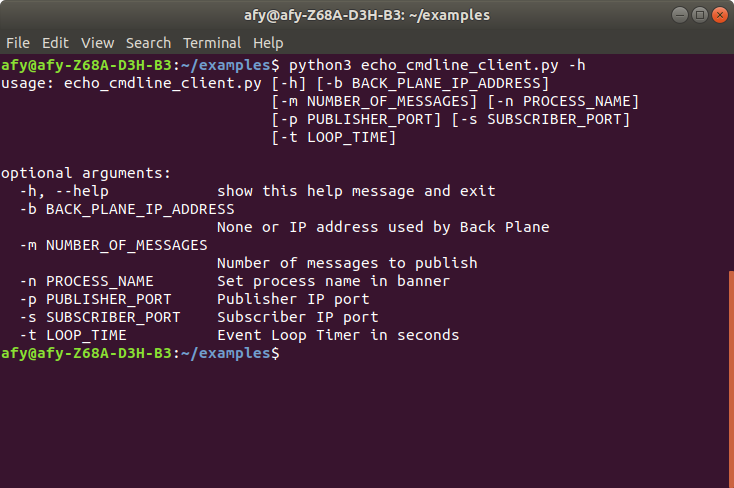
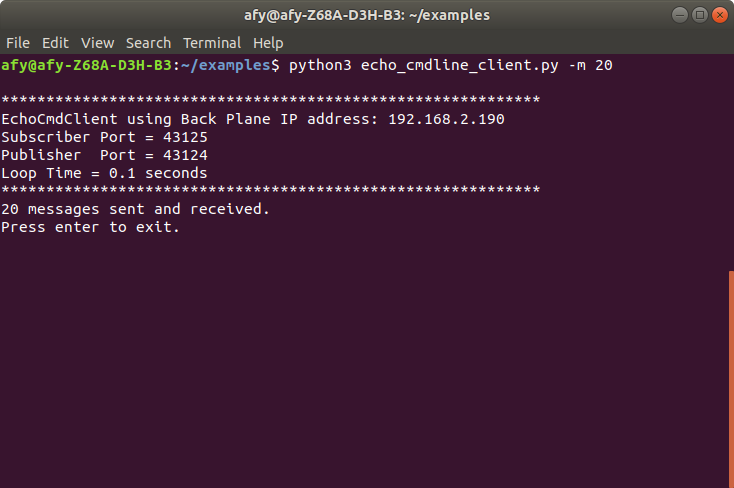

Modifying The Simple Echo Client
Being able to set a component's parameters using command-line options allows the user to change a component's behavior.
To demonstrate, we will use the existing simple echo client. The code will be modified to allow the user to do the following via the command line:
- Specify the Backplane IP address
- Specify the publisher and subscriber port numbers
- Specify the number of messages to send to the server
- Specify a process name to display on the banner
- Specify the loop time
This example allows the user to specify, none, one, or any combination of parameters, allowing maximum flexibility.
To process user-specified command-line parameters, we will use the argparse library.
A code comparison will be provided for the modified code. Any new code that is required is also shown for the feature.
Once we modify the code, we will be able to print a help screen to the console by merely invoking the program with a -h command-line option. A list of all command-line options will be displayed for the user to choose from.

Adding the Necessary Imports
We will import the argparse package as well as the signal package to the original file. Argparse allows us to create the command line arguments. The signal enables us to trap and process a Control-C entered by the user.
22 import argparse
23 import signal
Modifying The Component Class
Line 29 declares the name for our modified client.
Lines 31 through 56 provide usage information.
Lines 59 defines the __init__ method, and it accepts a dictionary of parameters, called kwargs. The kwargs dictionary is populated near the end of the program.
Lines 88 through 92 dereference the kwargs values and passes the values to the parent class.
The rest of the class definition is unchanged.
29 class EchoCmdClient(BanyanBase):
30 """
31 This is an echo client that will allow the user
32 to specify command line arguments to change the default behavior
33 of the client.
34
35 It sends out a series of messages and expects an
36 echo reply from the server. When it completes, press enter, and it
37 will send a message to the server so that it also quits
38
39 To use: 1. Start the backplane.
40 2. Start the server.
41 3. Start this client.
42
43 usage: echo_cmdline_client.py [-h] [-b BACK_PLANE_IP_ADDRESS]
44 [-m NUMBER_OF_MESSAGES] [-n PROCESS_NAME]
45 [-p PUBLISHER_PORT] [-s SUBSCRIBER_PORT] [-t LOOP_TIME]
46
47 optional arguments:
48 -h, --help show this help message and exit
49 -b BACK_PLANE_IP_ADDRESS
50 None or IP address used by Back Plane
51 -m NUMBER_OF_MESSAGES
52 Number of messages to publish
53 -n PROCESS_NAME Set process name in banner
54 -p PUBLISHER_PORT Publisher IP port
55 -s SUBSCRIBER_PORT Subscriber IP port
56 -t LOOP_TIME Event Loop Timer in seconds
57 """
58
59 def __init__(self, **kwargs):
60
61 """
62 kwargs is a dictionary that will contain the following keys:
63
64 :param back_plane_ip_address: banyan_base back_planeIP Address -
65 if not specified, it will be set to the
66 local computer
67 :param subscriber_port: banyan_base back plane subscriber port.
68 This must match that of the banyan_base backplane
69 :param publisher_port: banyan_base back plane publisher port.
70 This must match that of the
71 banyan_base backplane.
72 :param number_of_messages: number of message to transmit
73 :param process_name: Component identifier
74 :param loop_time: receive loop sleep time
75
76 """
77
78 # initialize the parent
79 super(EchoCmdClient, self).__init__(back_plane_ip_address=kwargs['back_plane_ip_address'],
80 subscriber_port=kwargs['subscriber_port'],
81 publisher_port=kwargs['publisher_port'],
82 process_name=kwargs['process_name'],
83 loop_time=kwargs['loop_time'])
84
85 # accept banyan messages with the topic of reply
86 self.set_subscriber_topic('reply')
87
88 # sequence number of messages
89 self.message_number = kwargs['number_of_messages']
90
91 # number of messages to send
92 self.number_of_messages = kwargs['number_of_messages']
93
94 # send the first message - make sure that the server is already started
95 self.publish_payload({'message_number': self.message_number}, 'echo')
96
97 # get the reply messages
98 try:
99 self.receive_loop()
100 except KeyboardInterrupt:
101 self.clean_up()
102 sys.exit(0)
Adding A Startup Function After The Class Definition
Here, we create a function that follows the class definition. This function, called echo_cmdline_client(), will instantiate the class and parse any command-line options that the user may have specified.
This function is contained within lines 125 to 168.
Line 126 creates an instance of an ArgumentParser.
Lines 129 through 144 create the command-line options and adds them to the argument parser.
Line 146 creates a variable called args and populates args with the values for all of the command-line options.
Lines 148 through 155 retrieve the option values using the defaults or the values provided by the user. The options are then added to a Python dictionary called kw_options.
Line 158 instantiates the class, passing in the kw_options.
Lines 161 through 164 add a signal handler to trap a user entered Control-C.
Line 172 calls the echo_cmdline_client function on line 125 to invoke the client.
125 def echo_cmdline_client():
126 parser = argparse.ArgumentParser()
127 # allow user to bypass the IP address auto-discovery.
128 # This is necessary if the component resides on a computer
129 # other than the computing running the backplane.
130 parser.add_argument("-b", dest="back_plane_ip_address", default="None",
131 help="None or IP address used by Back Plane")
132 parser.add_argument("-m", dest="number_of_messages", default="10",
133 help="Number of messages to publish")
134 # allow the user to specify a name for the component and have it shown on the console banner.
135 # modify the default process name to one you wish to see on the banner.
136 # change the default in the derived class to set the name
137 parser.add_argument("-n", dest="process_name", default="EchoCmdClient",
138 help="Set process name in banner")
139 parser.add_argument("-p", dest="publisher_port", default='43124',
140 help="Publisher IP port")
141 parser.add_argument("-s", dest="subscriber_port", default='43125',
142 help="Subscriber IP port")
143 parser.add_argument("-t", dest="loop_time", default=".1",
144 help="Event Loop Timer in seconds")
145
146 args = parser.parse_args()
147
148 if args.back_plane_ip_address == 'None':
149 args.back_plane_ip_address = None
150 kw_options = {'back_plane_ip_address': args.back_plane_ip_address,
151 'number_of_messages': int(args.number_of_messages),
152 'publisher_port': args.publisher_port,
153 'subscriber_port': args.subscriber_port,
154 'process_name': args.process_name,
155 'loop_time': float(args.loop_time)}
156
157 # replace with the name of your class
158 EchoCmdClient(**kw_options)
159
160
161 # signal handler function called when Control-C occurs
162 def signal_handler(sig, frame):
163 raise KeyboardInterrupt
164
165
166 # listen for SIGINT
167 signal.signal(signal.SIGINT, signal_handler)
168 signal.signal(signal.SIGTERM, signal_handler)
169
170
171 if __name__ == '__main__':
172 echo_cmdline_client()
Using The -m Option
We can now specify the number of messages the client produces while accepting the other parameters' default values.
Ensuring that the backplane and server are already running, we can start the new client, asking it to produce 20 messages.
python3 echo_cmdline_client.py -m 20
This command will create 20 messages.
Here is what the client console displays after running this command.

Copyright (C) 2017-2020 Alan Yorinks All Rights Reserved